2020年一季度居民消费价格预期调查报告
参加2020年一季度居民消费价格预期调查的专家及相关专业人士303人，收回有效问卷303份。受生猪价格波动和元旦、春节来临的影响，2020年一季度（本期）居民消费价格总水平和主副食品价格继续以缓涨预期为主，随着猪肉价格企稳回落，看涨情绪较上期有所减弱，较2019年同期有所增强。由于各地认真贯彻落实房地产调控措施，本期商品房总体价格预期平稳。与上期相比，本期商品房总体价格预期有所转冷，由上期的以稳中缓涨预期为主转为平稳预期。
一、居民消费价格总水平预期继续缓涨
与2019年四季度相比，预计2020年一季度居民消费价格总水平上涨263人，占比86.8%；预计基本持平31人，占比10.23%；预计有所下降9人，占比2.97%；无人预计明显下降。总体来看，绝大多数人持居民消费价格总水平上涨预期，并以缓涨为主。
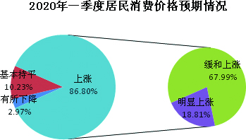
从居民消费价格总水平预期走势看，与上期96.21%的人预计居民消费价格总水平上涨相比，本期减少了9.41个百分点；与2019年同期的70.27%相比，本期增加了16.53个百分点。
与上期3.15%的人预计居民消费价格总水平基本持平相比，本期增加了7.08个百分点；与2019年同期的27.33%相比，本期减少了17.1个百分点。
本期居民消费价格总水平下降预期仍处低位占比，与上期的0.32%和2019年同期的2.40%相比，分别增加了2.65和0.57个百分点。
调查表明，本期居民消费价格总水平继续以缓涨预期为主，但较上期看涨情绪有所消退，较2019年同期则有所升温。
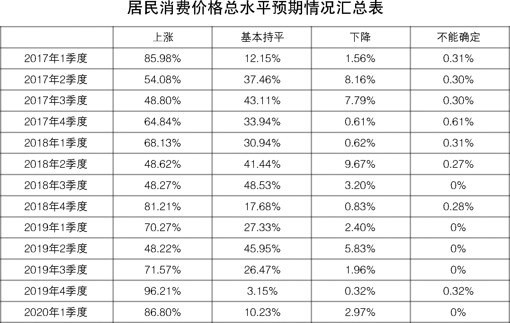
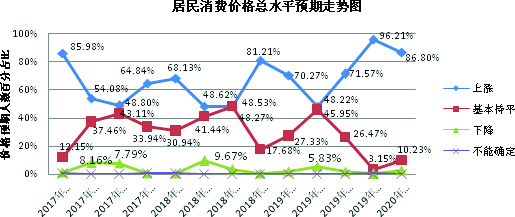
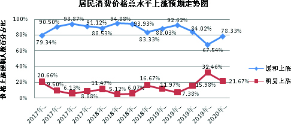
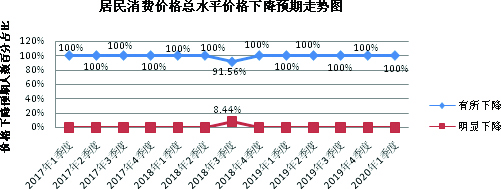
二、主副食品价格预期继续缓涨
与上期相比，预计2020年一季度主副食品价格上涨267人，占比88.12%；预计基本持平29人，占比9.57%；预计有所下降7人，占比2.31%；无人预计明显下降。
调查结果显示，受生猪价格波动和元旦春节双节来临的影响，近九成的人预计2020年一季度主副食品价格上涨，其中预计缓和上涨人数占比超过七成；不足一成的人预计主副食品价格基本持平。绝大部分人预计主副食品价格上涨，并以缓涨为主。
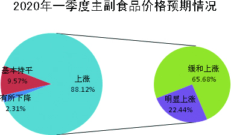
从主副食品价格预期走势看，与上期92.74%的人预计主副食品价格上涨相比，本期减少了4.62个百分点；与2019年同期的72.07%相比，本期增加了16.05个百分点。
与上期6.94%的人预计主副食品价格基本持平相比，本期增加了2.63个百分点；与2019年同期的26.43%相比，本期减少了16.86个百分点。
相对于2019年同期1.5%和上期的无人预计主副食品价格下降，本期持下降预期人数占比略有回升，但仍处低位水平。
调查显示，本期主副食品价格继续保持缓涨预期，与上期相比，看涨预期人数占比略有回落；与2019年同期相比，看涨预期人数占比则明显提升。
大米、食用油和猪肉价格预期：本期预计大米价格上涨65人，占比21.45%；基本持平229人，占比75.58%；有所下降9人，占比2.97%；无人预计明显下降。预计食用油价格上涨129人，占比42.57%；基本持平171人，占比56.44%；有所下降3人，占比0.99%；无人预计明显下降。预计猪肉价格上涨219人，占比72.27%；基本持平37人，占比12.21%；下降45人，占比14.85%；不能确定2人，占比0.66%。
调查显示，与上期相比，本期大米、食用油价格预期变化不大，其中大米价格继续以平稳预期为主，食用油价格继续保持以稳中缓涨预期为主。相对于大米和食用油较为平稳的价格走势，今年以来“涨涨不休”的猪肉价格,终于在11月初开始企稳甚至出现回调，这说明政府有关部门向市场投放储备猪肉、扩大产能和猪肉进口等一系列调控政策的效应逐步显现。猪肉价格走势趋缓，对于看涨预期起到了一定的平抑作用。调查结果也验证了这一点，相对于上期猪肉价格呈明显上涨预期，本期看涨情绪有所降温，转为以缓涨预期为主。2020年一季度，特别是元旦春节消费高峰期集中来临，考虑到猪肉进口增加且基本在库待售、前期压栏生猪逐步上市、政府会择机增加储备猪肉投放等因素，加上前期价格高位运行抑制消费，双节期间猪肉供需形势有望好于预期。后期，鉴于生猪的产能全面恢复尚需时日，猪肉价格高位运行恐还将持续一段时间，各级政府和相关部门仍需继续密切关注生猪市场形势变化，加强价格监测和预警，并适时做好储备冻猪肉收储和市场投放等工作，确保猪肉市场供给，引导价格合理预期。
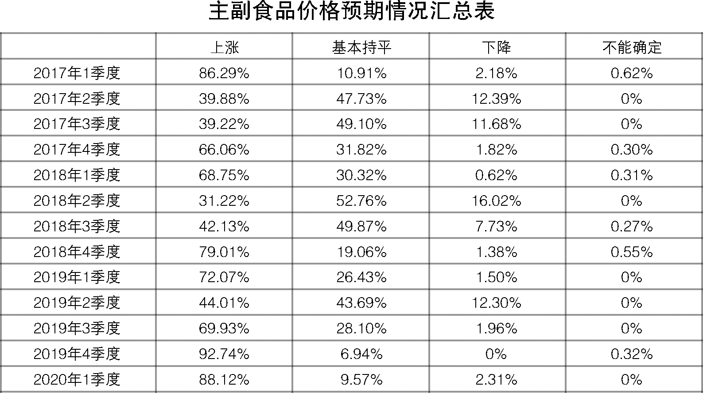
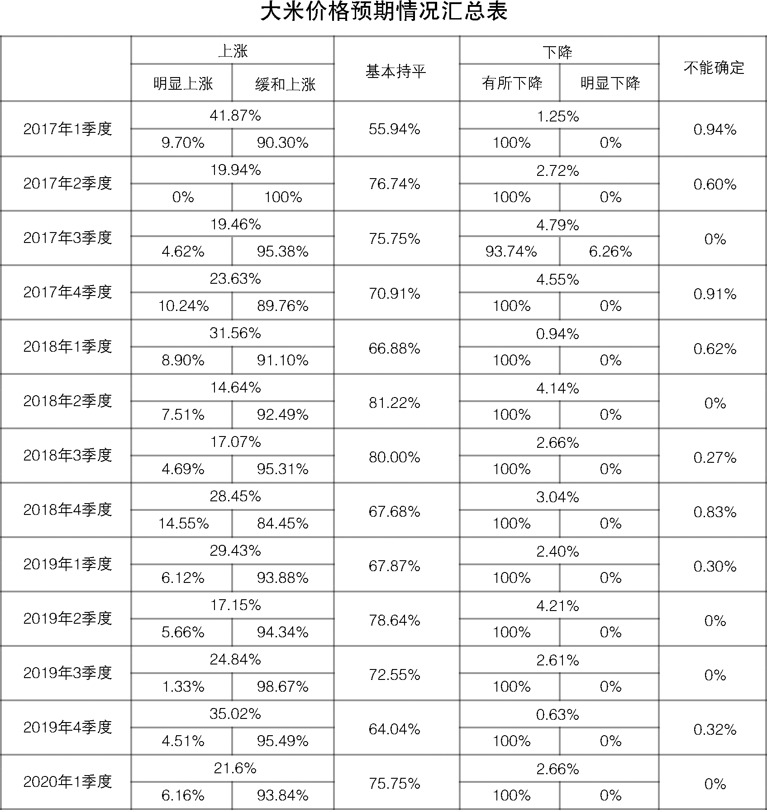
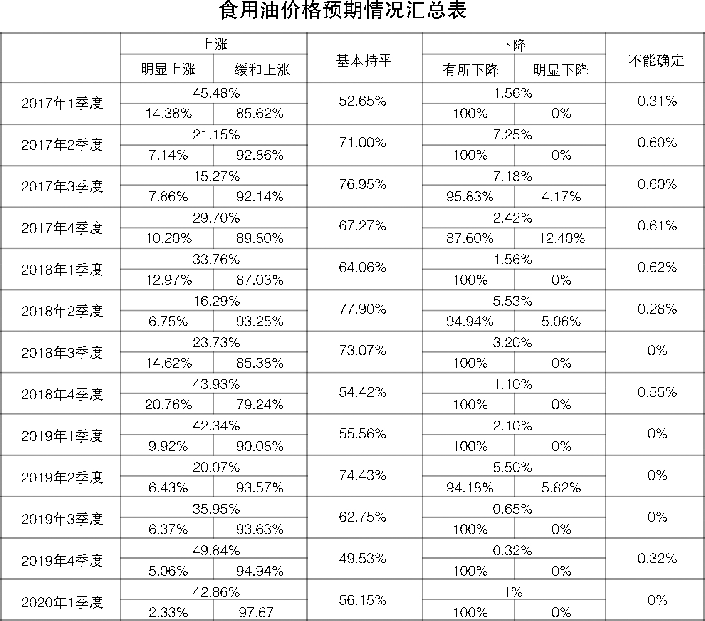
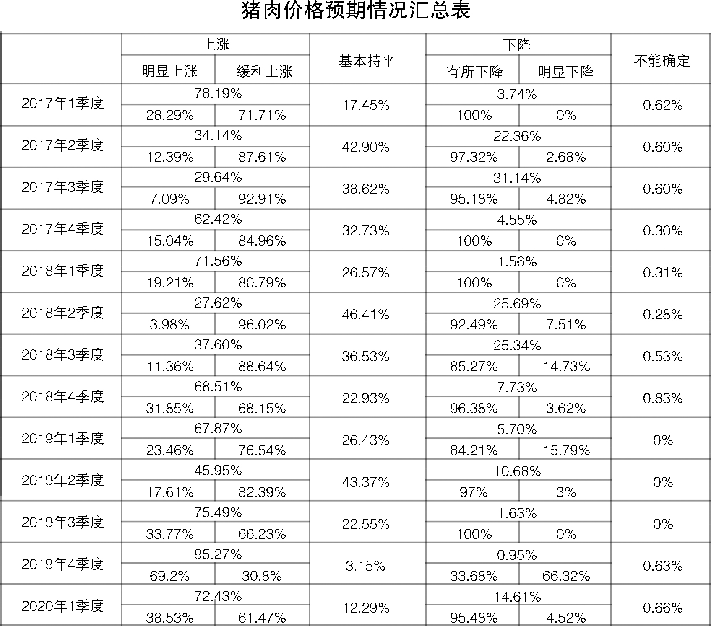
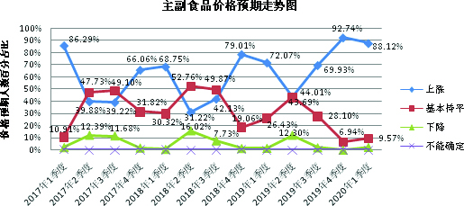
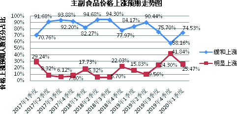
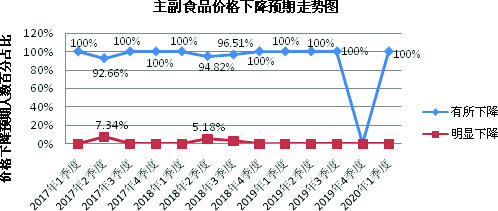
三、商品房价格上涨预期有所减弱，呈平稳预期
调查显示，预计2020年一季度商品房总体价格上涨117人，占比38.36%；预计总体价格基本持平167人，占比54.75%；预计总体价格有所下降21人，占比6.89%，无人预计明显下降。
调查结果显示，约4成的人预计2020年一季度商品房总体价格上涨，其中预计缓和上涨的人数超过九成；超5成的人预计商品房总体价格基本持平；极少数的人预计商品房价格下降。总体来看，本期商品房总体价格以平稳预期为主。
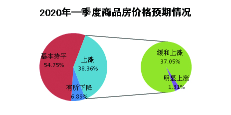
从本期商品房价格预期走势看，本期商品房总体价格上涨预期有所回落，较上期减少了16.84个百分点；与2019年一季度的25.53%相比，增加12.83个百分点。
与上期41.01%的人预计商品房总体价格基本持平相比，本期增加了13.74个百分点；与2019年一季度的50.15%相比，本期微增了4.6个百分点。
与上期3.79%的人预计商品房总体价格下降相比，本期持下降预期的人数略有上升，增加3.1个百分点；与2019年一季度的23.72%相比，减少16.83个百分点。
调查显示，相对于上期，本期商品房总体价格看涨预期有所降温，由以稳中缓涨预期为主转为以平稳预期为主。与2019年一季度相比，本期看涨预期则有所增强，但变化并不明显。
从全省各地商品房价格预期情况来看，与上期相比, 全省各地商品房价格看涨预期普遍有所回落。其中，南京、无锡、徐州、常州、苏州、南通、盐城等7个市商品房价格以缓涨预期为主；淮安、泰州2个市商品房价格以稳中缓涨预期为主；连云港、盐城、镇江、宿迁4个市商品房价格以看平预期为主。
自2016年“930”房地产调控以来，我省房地产市场开启了全面“降温”长周期，今年年初虽然部分城市出现了“量价齐升”的小阳春行情，但这波行情很快就随着调控政策的收紧而终结。显而易见，尽管2019年房地产调控政策频繁出台，但求“稳”是贯穿始终的调控目标。展望2020年，继12月上旬召开的中央经济工作会议明确“三稳”房地产调控目标后，12月23日召开的全国住房和城乡建设工作会议再次重申，2020年要着力稳地价稳房价稳预期，不把房地产作为短期刺激经济的手段。这充分说明，“稳”将是明年乃至未来更长一段时间内我国房地产政策和市场的主基调，因城施策并不意味着调控放松，而是在“稳”的前提下，不断提升政府调控的精准性。2020年一季度，我省部分城市房价随着城市发展或者政策调整仍然有进一步上涨的可能，各级政府及有关部门仍需继续关注房地产市场变化，因城因势精准施策，确保房地产市场平稳健康运行。
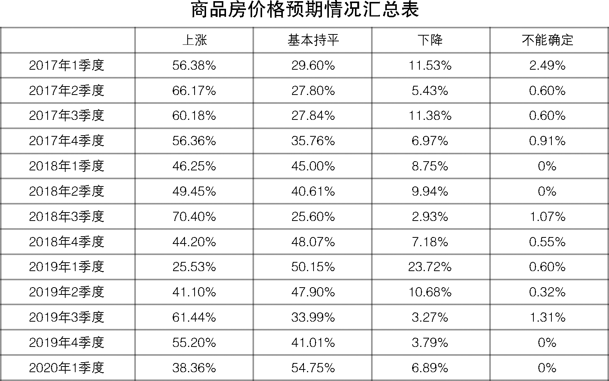
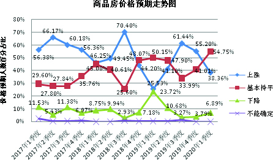
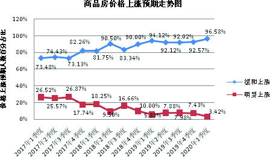
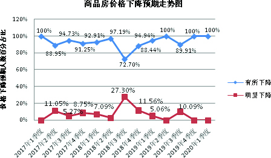
江苏省物价局-江苏省物价局网站
二○一九年十二月